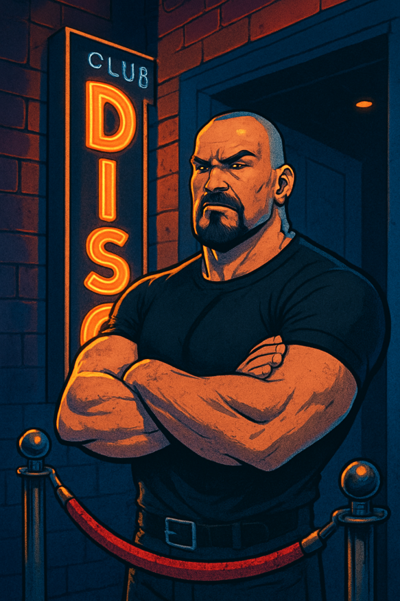

THE KLUB
Where Premodern Never Gives Up
El klub de Premodern MTG para gente que juega por amor al formato, no por ganar a toda costa. Torneos semanales de Magic: The Gathering, clasificaciones en directo, y un Discord donde se juega en serio sin tomárselo demasiado en serio.
Where Premodern Never Gives Up
La mayoría de servidores de Discord sobre Premodern mueren de la misma forma: hype durante un mes, luego silencio, o se llenan de gente que solo piensa en ganar. The Klub existe para lo contrario: un sitio donde jugar Premodern siga siendo divertido, con gente que se presenta, respeta a sus rivales, y disfruta el formato sin convertirlo en una guerra. Lee el Código a continuación — si resuena contigo, solicita tu admisión.
El acceso a The Klub está regulado por la organización. Preferimos diez jugadores con buena onda a cien que solo vienen a competir.
Respeta a los demás miembros, a los organizadores y el espíritu del klub en todo momento. Aquí se juega para pasarlo bien, no para machacar al de enfrente.
Si te apuntas a una competición, intenta terminarla. No hace falta ganar — solo estar, jugar, y disfrutar del formato con el resto.
Abandonar eventos sin avisar no está bien visto. Tus rivales sacaron tiempo para jugar contigo — el mínimo es avisar si no vas a poder.
Las partidas deben programarse y reportarse dentro de los plazos establecidos. Nada del otro mundo, solo un poco de organización para que todos disfrutemos.
Premodern no es nostalgia ni una excusa para el tryhard. Es nuestra forma de seguir jugando Magic: The Gathering como nos gusta.
Torneos mensuales y el Battle Royale semestral — dos formas distintas de vivir Premodern, cada una con sus propias reglas para que elijas cómo quieres jugar.
Rondas suizas cada mes, abiertas a todos los miembros de The Klub. Permitimos gold border y proxies de la Reserved List — y aunque haya top en juego, puedes cambiar hasta el mazo completo una vez por torneo.
Dos veces al año, todos contra todos. Sin tops, sin presión — cambia de mazo cuando quieras y reta a quien quieras. Aquí permitimos proxear las 75 cartas: solo importa jugar.
Desliza para ver la clasificación completa de cada torneo jugado en The Klub.
The KlubCast: conversaciones sobre Premodern, torneos y la comunidad. Disponible en iVoox y Spotify.
Crónicas de torneos, análisis de metajuego y reflexiones sobre Premodern, publicadas en nuestro Medium.
Cargando últimos artículos...
The Klub no busca a los jugadores más competitivos ni a los que más torneos ganan. Buscamos gente con la que dé gusto sentarse a jugar. Si eso te suena a ti, cuéntanos un poco sobre ti.
Te contactaremos pronto por Discord o email. Gracias por tu interés en The Klub.

Has agotado tus intentos de solicitud. Si crees que es un error, contacta con nosotros directamente en Discord.
Where Premodern Never Gives Up
Buscamos gente, no culos duros.
No construimos una comunidad. Construimos un Klub.
Se juega para disfrutar, no para machacar.
Respeta el Código. Siempre.
No es para todos. Esa es la idea.